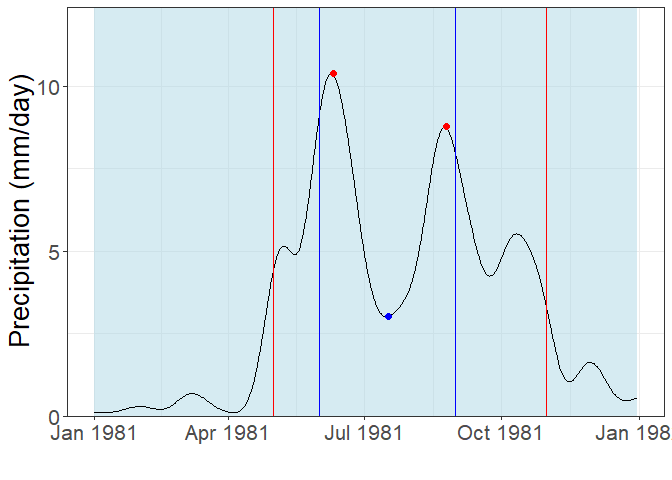

The msdrought R package contains functions for calculating characteristics of a mid-summer drought (MSD), a phenomenon of decreased rainfall during a typical rainy season. The MSD is a feature of rainfall in much of Central America, but is also found in other locations, typically those with a Mediterranean climate. The details are described in “The Mesoamerican mid-summer drought: the impact of its definition on occurrences and recent changes”, HESS, Maurer et al. (2022) ‘https://hess.copernicus.org/articles/26/1425/2022/’.
Example
These are the steps required to create useful MSD data:
-
Begin with a xts or spatraster of precipitation data over time.
Please view the sample-walkthrough or the raster-sample vignettes for information on how to properly format the data and how to proceed with utilizing this package.
-
Filter this data using the msdFilter function.
A bartlett noise filter is applied to the data in order to smooth the precipitation data over time via weighted average
-
Use the msdDates function to extract relevant dates for the calculations.
There are two sets of necessary dates when calculating the MSD statistics: the critical periods and the start and end of the year. This function determines both and stores them as a single vector. The following function (msdStats) breaks the two types of dates apart, so it is important to not change the output of the msdDates function before feeding it into the subsequent msd function.
-
Supply the msdStats function with precipitation data, the data from msdDates, and a selected parameter to calculate.
The precipitation data must be filtered using the msdFilter function. In order for this function to provide useful data, the input from msdDates must be unchanged from its original output. The following parameters are applicable to the MSD calculation: duration, intensity, firstMaxValue, secondMaxValue, min, and mindex.
-
Alternatively, use the msdMain function to calculate every relevant statistics related to the MSD phenomenon
The msdMain function runs the msdStats function for every parameter and every year. This output is much more comprehensive if you are looking to characterize multiple years of data, or are just wanting to understand one year’s parameters all at once.
-
Create a plot of one year of rainfall data to visualize the MSD phenomenon and its parameters
Using the msdGraph function, a visual plot of the filtered rainfall data, its key dates, and the peaks and valleys used to characterize the drought can be created.
library(msdrought)
library(xts)
#> Loading required package: zoo
#>
#> Attaching package: 'zoo'
#> The following objects are masked from 'package:base':
#>
#> as.Date, as.Date.numeric
#------------------------------------------------------------------------------------------------------------------------------
# Load in the data that will be analyzed.
data("timeseries")
x <- as.xts(timeseries)
#------------------------------------------------------------------------------------------------------------------------------
# msdDates <- (times, peakWindow1 = "05-01", minWindow1 = "06-01", minWindow2 = "08-31", peakWindow2 = "10-31")
keyDatesTS <- msdrought::msdDates(as.Date(stats::time(x)))
#------------------------------------------------------------------------------------------------------------------------------
# msdFilter <- msdFilter(x, window = 31, quantity = 2)
filterTS <- msdrought::msdFilter(x, window = 31, quantity = 2)
#------------------------------------------------------------------------------------------------------------------------------
# msdStats <- msdStats(x, dates, fcn)
duration <- msdrought::msdStats(filterTS, keyDatesTS, fcn = "duration")
#> Registered S3 method overwritten by 'quantmod':
#> method from
#> as.zoo.data.frame zoo
intensity <- msdrought::msdStats(filterTS, keyDatesTS, fcn = "intensity")
firstMaxValue <- msdrought::msdStats(filterTS, keyDatesTS, fcn = "firstMaxValue")
secondMaxValue <- msdrought::msdStats(filterTS, keyDatesTS, fcn = "secondMaxValue")
min <- msdrought::msdStats(filterTS, keyDatesTS, fcn = "min")
#------------------------------------------------------------------------------------------------------------------------------
# msdMain <- msdMain(x, firstStartDate, firstEndDate, secondStartDate, secondEndDate, window, quantity)
allStats <- msdrought::msdMain(x)
#------------------------------------------------------------------------------------------------------------------------------
# msdGraph <- msdGraph(x, year, firstStartDate, firstEndDate, secondStartDate, secondEndDate, window, quantity)
graph1981 <- msdrought::msdGraph(x, 1981)
plot(graph1981)